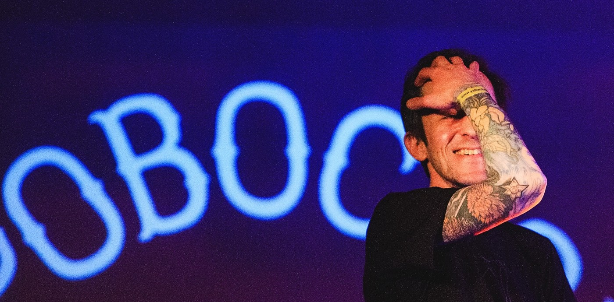

История группы
Участники группы «Кровосток» — Антон Черняк (Шило) и Дмитрий Файн (Фельдман) — вместе учились в МГАХУ памяти 1905 года, затем оба участвовали в арт-группе «ФенСо». После этого Шило выступал в проекте под названием «ПГ». Ещё с одним, уже бывшим участником Кровостока — Сергеем Крыловым они познакомились в основанном группой «ПГ» арт-клубе «ПушкинГ», где тот работал барменом.
Изначально они создавали лиричные стихи, накладывая их на брэйк-битовую музыку. В интернете на сайте krovostok.ru были выложены восемь композиций, которые позже вошли в дебютный альбом «Река крови».
Концертную деятельность начали в 2004 году.
В начале 2007 года в интернете стали популярными песни «Гантеля», «ГЭС», «Киса», «Ночь», «Метадон» с ещё не выпущенного на тот момент альбома «Гантеля». Альбом «Гантеля» вышел 24 января 2008 года и по своей концепции напоминал «Реку Крови», только «более качественную» в плане звукозаписи. С выходом альбома популярность группы выросла.
На рубеже 2010—2011 годов вышел сингл группы под названием «Представьте», повествующий о наёмных убийцах и торговле людьми, а также ещё два сингла: «Душно» и «Пора Домой».
24 марта 2012 года вышел новый альбом «Студень».
21 февраля 2014 года вышел сингл под названием «Ногти». 13 мая вышел очередной сингл «Череповец». 11 октября вышел сингл «Секс — это».
6 марта 2015 года вышел пятый студийный альбом группы, получивший название «Ломбард».
26 марта 2016 года вышел сингл под названием «Наёк ёк». 9 августа 2016 года вышел сингл «Душ». 1 марта 2017 года вышел сингл под названием «Голова».
В марте 2018 года было объявлено, что к концу месяца группа выпустит сразу два релиза — концертный и студийный. Концертный альбом «Кровосток Лайв» вышел 23 марта, а через неделю, 30 марта, на всех цифровых площадках вышел шестой студийный альбом «ЧБ», содержащий 11 треков, в том числе синглы «Наёк Ёк», «Душ» и «Голова».
19 марта 2021 года вышел 7 студийный альбом под названием "Наука", содержащий 10 треков, в том числе синглы «Зашёл, вышел», «Дети».
Концерт и суд в Ярославле
В 2015 году сотрудники ярославского управления ФСКН обратились к жителям региона с просьбой не пускать лиц, не достигших 18 лет, на концерты группы «Кровосток». «Творчество этой группы содержит значительный объём нецензурной лексики, сленговых названий наркотиков, популяризирует немедицинское потребление психоактивных веществ, совершение противоправных деяний, применение насилия. Мы не хотим, чтобы на их концерте присутствовали несовершеннолетние» — рассказала Е. Малахова, пресс-секретарь УФСКН по Ярославской области.
В июле 2015 года Кировский районный суд города Ярославля признал запрещённой информацию, размещенную на сайте «Кровостока», за пропаганду насилия и употребления наркотиков. Автор текстов группы Дмитрий Файн назвал запрет на своё творчество антиконституционным.
12 октября в Ярославском областном суде прошло заседание по апелляции от группы «Кровосток». Однако решения в этот день принято не было, так как не все стороны оказались ознакомлены с дополнительными материалами по делу. Суд перенесли на 27 октября.
12 ноября Ярославский областной суд отменил решение Кировского районного суда о запрете песен группы и блокировке её сайта, претензии прокуратуры были отклонены в полном объёме.
Состав
Основной состав
- Антон Черняк (Шило; Антон Обвальщик) — вокалист, автор текстов.
- Дмитрий Файн (Фельдман; Доктор Фельдман) — автор текстов, продюсер.
- Константин Рудчик (Фантомас 2000) — битмейкер (с 2007 года), бэк-вокалист (с 2011 года), также является автором некоторых текстов.
Бывшие участники группы
- Сергей Крылов (DJ Полутруп) — битмейкер, сочинял музыку первых двух альбомов, ныне с гр. «Кровосток» не работает.
- Константин Аршба (Кот) — бэк-вокалист; принимал участие в записи альбома «Река крови»; бывший участник группы «43 градуса», ныне актёр мюзикла «Копы в огне».
Дискография
Студийные альбомы
Концертные альбомы
- 2018 — «Кровосток Лайв»
Синглы
2004
- Биография
- Белый ягуар
- Бакланы
- Разговоры о Напасах (feat. Кот («43 Градуса»))
2005
- Хочешь?
- ГидроГаш (feat. Красное дерево)
2007
- Гантеля
- ГЭС
- Беспорядки
2011
- Представьте
- Пора домой
- Душно
2014
- Ногти
- Череповец
- Секс Это
2015
- Ломбард
2016
- Наёк ёк
- ДУШ
2017
- Голова
2020
- Дети
- Зашёл, вышел
Видеоклипы
У группы нет ни одного официального клипа, все клипы сделаны энтузиастами.
- Теряю голову Live (2006)
- Бакланы Live (2008)
- Гантеля караоке (2009)
- Беспорядки караоке (2009)
- Колхозники (2010)
- Г. Э.С (2010)
- Куртец (2012) (представляет собой нарезку фрагментов из фильма «Чужая»).
- Кровосток в Санкт-Петербурге (канал на YouTube).
- Ногти (при уч. К. Собчак) (2015) — нарезка кадров из телеканала «Дождь», а также часть интервью К. Собчак с группой «Кровосток».
- Череповец — клип-демонстрация пейзажей города Череповца в авторстве Рины Драгуновой.
Критика
«Текст о бандитской жизни под названием «Биография», например, хоть и не подлежит даже минимальному цитированию в массовых СМИ, представляет собой, может быть, лучшее рифмованное произведение на тему «кровавых 90-х». Будь моя воля, я бы, ни секунды не сомневаясь, включил его в учебники истории.»
Борис Барабанов, «Коммерсантъ»

Михаил Феничев, участник групп «2H Company» и «Есть Есть Есть», в интервью для первого российского выпуска журнала «Билборд» в 2007 году утверждал: «Я считаю, что именно „Кровосток“ — это большой прорыв для русского рэпа». Другие участники 2H Company, в том числе Илья Барамия, также хвалили «Кровосток».
Журнал Where Siberia в 2013 году писал: «Кровосток — своеобразная рэп-команда, которая эксплуатирует темы, стиль и язык гангста-рэпа, но по большому счёту является художественной пародией на источник. Это и создаёт тот удивительный парадокс, что криминальные истории из 90-х с большим количеством нецензурной лексики стали особенно популярны у образованной публики, способной оценить их мощный философский и иронический подтекст. С приходом битмейкера Фантомаса 2000 группа стала звучать на одной волне с самыми модными явлениями интеллектуального русского хип-хопа, такими как 2H Company, СБПЧ и Птицу Емъ».